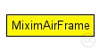
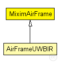

This documentation is released under the Creative Commons license
This documentation is released under the Creative Commons licenseFormat of the packets that are sent to the channel
subclass if you want to create your own AirFrame packet class (see Omnet manual, chapter Messages - Inheritance among packet classes).
This packet format is used to send a packet from the physical layer to the channel. All other physical layers that can 'hear' this packet can evaluate noise, interference etc. from the information contained in this packet (especially the signal):
Note: BasePhy layer creates AirFrames with a slightly higher priority than normal to ensure channel consistency. This means that before anything else happens at a time point t every AirFrame which ended at t has been removed and every AirFrame started at t has been added to the channel. An example where this matters is a ChannelSenseRequest which ends at the same time as an AirFrame starts (or ends). Depending on which message is handled first the result of ChannelSenseRequest would differ.
If you need more fields for whatever reason, please do NOT create your own packet! Just extend (subclass) this packet format
The following diagram shows usage relationships between types. Unresolved types are missing from the diagram. Click here to see the full picture.
The following diagram shows inheritance relationships for this type. Unresolved types are missing from the diagram. Click here to see the full picture.
| Name | Type | Description |
|---|---|---|
| AirFrameUWBIR | message | (no description) |
| Name | Type | Description |
|---|---|---|
| signal | Signal |
Contains the physical data of this AirFrame |
| duration | simtime_t |
time the AirFrames takes to be transmited (without propagation delay) |
| state | int |
state of the AirFrames, used by the physical layer as state machine for delay and transmission duration simulation |
| type | int |
If type isn't null then this is a control-AirFrame and type specifies the control type. |
| id | long |
Unique ID of the AirFrame used as identifier for related control-AirFrames |
| protocolId | int |
the id of the phy protocol of this airframe |
| channel | int |
the channel of the radio used for this transmission |
// // Format of the packets that are sent to the channel // // subclass if you want to create your own AirFrame packet class // (see Omnet manual, chapter Messages - Inheritance among packet // classes). // // This packet format is used to send a packet from the physical // layer to the channel. All other physical layers that can 'hear' // this packet can evaluate noise, interference etc. from the // information contained in this packet (especially the signal): // // Note: BasePhy layer creates AirFrames with a slightly higher // priority than normal to ensure channel consistency. This means that before anything else happens // at a time point t every AirFrame which ended at t has been removed and // every AirFrame started at t has been added to the channel. // An example where this matters is a ChannelSenseRequest which ends at // the same time as an AirFrame starts (or ends). Depending on which message // is handled first the result of ChannelSenseRequest would differ. // // If you need more fields for whatever reason, please do NOT create // your own packet! Just extend (subclass) this packet format // packet MiximAirFrame { Signal signal; // Contains the physical data of this AirFrame simtime_t duration; // time the AirFrames takes to be transmited (without propagation delay) int state = 1; // state of the AirFrames, used by the physical layer // as state machine for delay and transmission duration // simulation int type = 0; // If type isn't null then this is a control-AirFrame // and type specifies the control type. long id; // Unique ID of the AirFrame used as identifier for // related control-AirFrames int protocolId; //the id of the phy protocol of this airframe int channel; //the channel of the radio used for this transmission }
This documentation is released under the Creative Commons license